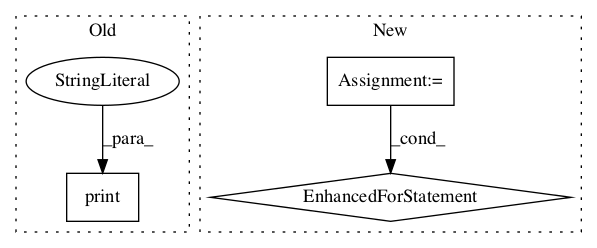

bb72c5b102a74486036d849b44f80ab3772a18f9,agents/ppo/dppo_worker.py,DPPOWorker,run,#DPPOWorker#,90

Before Change
message = None
while message != "collect":
message = self.comm.bcast(None, root=0)
print("gonna collect")
trajectory = self.env_runner.get_steps(
self.config["n_local_steps"], stop_at_trajectory_end=False)
T = trajectory.steps
value = 0 if trajectory.terminals[-1] else self.get_critic_value(
After Change
def run(self):
with tf.Session() as sess, sess.as_default():
var_receivers = [np.zeros(var.shape.as_list(), dtype=var.dtype.as_numpy_dtype) for var in self.global_vars]
while True:
for var_receiver, tf_var in zip(var_receivers, self.global_vars):
self.comm.Bcast(var_receiver, root=0)
tf_var.load(var_receiver)
trajectory = self.env_runner.get_steps(
self.config["n_local_steps"], stop_at_trajectory_end=False)
T = trajectory.steps
value = 0 if trajectory.terminals[-1] else self.get_critic_value(
In pattern: SUPERPATTERN
Frequency: 3
Non-data size: 3
Instances
Project Name: arnomoonens/yarll
Commit Name: bb72c5b102a74486036d849b44f80ab3772a18f9
Time:
Author: null
File Name: agents/ppo/dppo_worker.py
Class Name: DPPOWorker
Method Name: run
Project Name: tensorlayer/tensorlayer
Commit Name: 16a31e2c9fedc654e9117b42b8144adf1d0e4900
Time:
Author: null
File Name: examples/reinforcement_learning/tutorial_A3C.py
Class Name:
Method Name:
Project Name: deepmipt/DeepPavlov
Commit Name: 29ee3e34123191e7b444915b6be56edd8699aa36
Time:
Author: null
File Name: deeppavlov/core/commands/infer.py
Class Name:
Method Name: interact_model